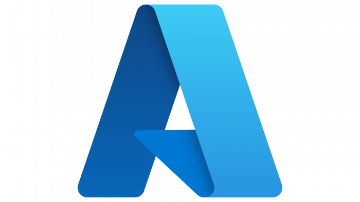
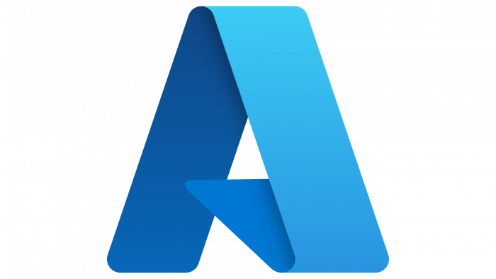

Cybersecurity & EDR
SentinelOne (+ MDR)
SentinelOne is an advanced cybersecurity platform providing endpoint protection, detection, and response (EDR) with integrated Managed Detection & Response (MDR) services for comprehensive threat prevention and remediation.


 
